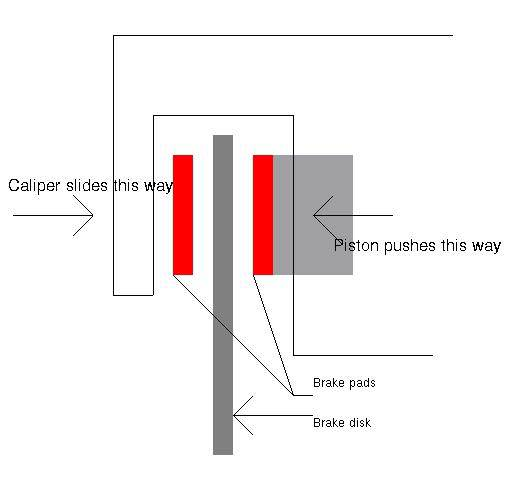
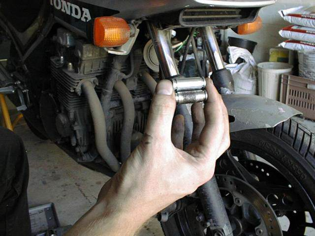

One thing that is often overlooked on the RC17 (and I am guilty of this, I must admit) is the care of the caliper slides.
The RC17 brake calipers are not of the opposed-piston design (where a brake piston pushes the brake pads against the disk from each side), they are of the sliding caliper design (where the pistons push the brake pads against the disk from one side, and the whole caliper slides backwards to pull the other pad against the brake disk).
If this sounds a bit complicated, here’s a diagram to explain how it all works:

I apologise for the poor quality of the drawing, but I hope that it’s enough to get the simple explanation across.
Now, after several months or years of riding and being exposed to the elements, the steel sliders will stick in the caliper body. This results in reduced braking power, and uneven wear of the brake pads and brake disk.
The only way to get back your original braking power is to free the sliders and get the caliper moving the way it is supposed to.
Overall, it’s almost trivial to install new sliders and those rubber ‘boots’ that cover the ends of them. I spent hours cursing and swearing at those rubber covers, trying to make them fit into the caliper bodies. So I was not looking forward to installing new ones.
The above picture shows two old rubber boots (note how worn and streched they are, and the large pieces missing from one of them) and a new equivalent. Note the size difference in the outer diameters – the stretching of the old boots makes them almost impossible to put back into the caliper bodies.
To replace the sliders and their rubber covers, all you have to do is remove the caliper slide bolts (the 14mm and 12mm bolts) and carefully move the caliper backwards so that it clears the brake disk. Then it’s a simple matter of pushing the slider out, pulling out the old rubber boots and installing the new ones. Of course, if you’ve never removed the sliders, you may need a large amount of force to get them out.
The method I use is as follows:
Remove the caliper from the bike
Remove the slide and rubber boots from the caliper
Clean the mounting bolts with a suitable degreaser
Clean the slider’s mounting hole in the caliper with degreaser
Remove all traces of old grease and rubber fragments from the groove inside the caliper body. This will allow the new rubber boot to sit properly. I used a nail bent into a right angle (and filed to the correct size) as a scraper to get all the gunk out.
Install one rubber boot into it’s mounting groove
Liberally cover the new slider with grease. In the past, I have used high temperature bearing grease, but this time I have used rubber grease, to see if it makes any difference.
Carefully push the slider into the mounting hole from the side opposite to the one where you have just installed the new rubber boot. I found that pushing on the slider whilst wiggling it from side to side in a circular motion works quite well. Be careful not to push the rubber boot from it’s groove. If you push the rubber from it’s groove, go back and re-install it.
Push the slider almost all the way through the caliper body. Don’t push it out the other side!
Put some more grease into the space where the slider would go, then install the second rubber boot. Carefully push the slider back through the caliper body, making certain that you don’t push the second rubber from it’s groove.
Carefully seat the outer lip on the rubber boot into the groove in the slider
Replace the caliper on the bike, making certain that the caliper mounting bolts are lightly greased, and tightened to the correct torque settings.
Once you get the hang of it, it’s really quite straight forward to do.
To give you an idea of how much corrosion does occur to the slider, here are some pictures of my old ones:
Note the difference between the old slider (with it’s band of corrosion and pitting) and the new one (lovely and shiny).

Here we have all three old sliders – Front Left, Front Right, and Rear. For some reason, the rear slider is the worst of them all.